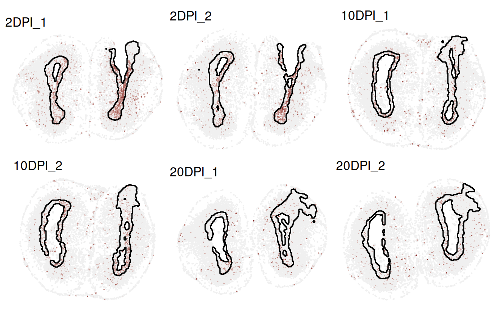
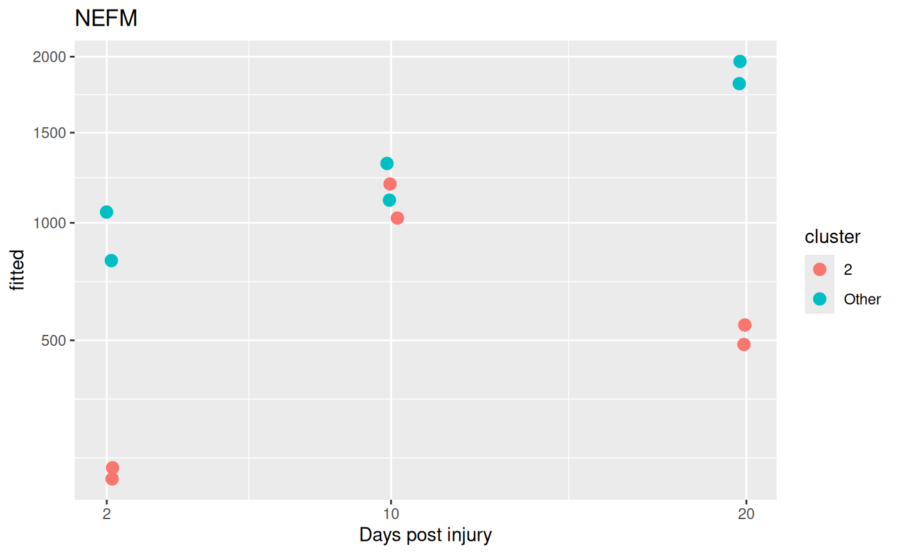

Differential Spatial Pattern between conditions
Peiying Cai
Institute for Molecular Life Sciences, University of Zurich, SwitzerlandSIB Swiss Institute of Bioinformatics, University of Zurich, Switzerlandpeiying.cai@uzh.ch
Simone Tiberi
Departiment of Statistical Sciences, University of Bologna, Italysimone.tiberi@unibo.it
10/31/2025
Source:vignettes/DSP.Rmd
DSP.RmdIntroduction
DESpace is a framework for identifying spatially variable genes (SVGs), a common task in spatial transcriptomics analyses, and differential spatial variable pattern (DSP) genes, which identify differences in spatial gene expression patterns across experimental conditions.
By leveraging pre-annotated spatial clusters as summarized spatial information, DESpace models gene expression with a negative binomial (NB), via edgeR (Robinson, McCarthy, and Smyth 2010), with spatial clusters as covariates. SV genes are then identified by testing the significance of spatial clusters. For detailed guidance on detecting SVGs with DESpace, refer to SVGs vignettes.
For multi-sample, multi-condition datasets, again we fit a NB model via edgeR (Robinson, McCarthy, and Smyth 2010), but this time we use spatial clusters, conditions and their interactions as covariates. DSP genes are then identified by testing the interaction between spatial clusters and conditions. Notably, this framework can identify differences also between more than 2 groups. This vignette will demonstrate how to perform DSP analyses.
Data
As an example dataset, we consider a multi-sample, multi-group spatially resolved transcriptomics data - the Stereo-seq dataset of taxolotl telencephalon brain regeneration stages (Wei et al. 2022). The dataset includes axolotl brain tissues collected at various days post-injury (DPI): 2 (3 sections), 5 (3 sections), 10 (3 sections), 15 (4 sections), 20 (3 sections), 30 (1 section) and 60 (1 section), after the removal of a reproducible portion of dorsal pallium in left telencephalic hemisphere of axolotl. The original dataset is available for download via STOmicsDB, and the processed dataset (including spatial clusters) can be accessed via muSpaData ExperimentHub package.
Input data
Here, we use a subset of the original data, consisting of three distinct regeneration stages: 2, 10 and 20 DPI, with two sections for each stage.
# Load the small example data
spe <- Wei22_example()
# The following columns from colData(spe) are specified:
coordinates <- c("sdimx", "sdimy") # coordinates of cells
spatial_cluster <- 'Banksy_smooth' # Banksy spatial clusters
condition_col <- 'condition' # regeneration time phases
sample_col <- 'sample_id' # tissue section id
colData(spe) |> head()## DataFrame with 6 rows and 5 columns
## sample_id condition Banksy_smooth sdimx sdimy
## <factor> <factor> <factor> <numeric> <numeric>
## CELL.17879.10DPI_1 10DPI_1 10DPI 4 1 2406
## CELL.17922.10DPI_1 10DPI_1 10DPI 4 10 2372
## CELL.17966.10DPI_1 10DPI_1 10DPI 4 29 3090
## CELL.17976.10DPI_1 10DPI_1 10DPI 4 33 3139
## CELL.17987.10DPI_1 10DPI_1 10DPI 4 33 2267
## CELL.17988.10DPI_1 10DPI_1 10DPI 4 37 2791The spatial tissues of each sample were annotated via Banksy (Singhal et al. 2024), classifying cells into
five clusters. These cluster annotations are stored in the
Banksy_smooth column of colData. Additionally, the columns
sdimx and sdimy contain the spatial
coordinates of the cells, while the condition column
specifies the group (i.e., stage) each cell belongs to.
Quality control/filtering
Quality control (QC) procedures at the cell and gene level aim to remove both low-quality cells, and lowly abundant genes. For QC, we adhere to the instructions from “Orchestrating Spatially Resolved Transcriptomics Analysis with Bioconductor” (OSTA). Library size and UMI counts are used to identify low-quality cells. Then, we discard lowly abundant genes that are detected in fewer than 20 cells. R scripts for performing quality control on this example dataset can be found in muSpaData R scripts.
Clustering
This framework relies on spatial clusters being accessible and successfully summarizing the primary spatial characteristics of the data. In most datasets, these spatial features are either accessible or can be generated with spatial clustering algorithms.
Manual annotation
If the manual annotation (e.g., annotated by a pathologist) for each sample is available, we can combine all samples and use manual annotations directly. Note that cluster labels must be consistent across samples (i.e., cluster 1 in sample 1 should represent the same tissue as cluster 1 in sample 2).
Spatially resolved (multi-sample) clustering
If manual annotations are not available, we can use spatially resolved clustering tools. These methods, by jointly employing spatial coordinates and gene expression data, enable obtaining spatial clusters.
Among others, BayesSpace (Zhao et al. 2021) and Banksy (Singhal et al. 2024) allow jointly clustering multiple samples. In particular each tool has a specific vignettes for multi-sample clustering: BayesSpace vignettes, and Banksy vignettes.
Details on applying Banksy joint clustering to this example dataset can also be found in muSpaData R scripts.
# View Banksy clusters
# The spatial cluster assignments are available in the `colData(spe)`
CD <- colData(spe) |> as.data.frame()
ggplot(CD, aes(x = sdimx, y = sdimy, color = factor(Banksy_smooth))) +
geom_point(size = 0.25) +
facet_wrap(~sample_id, scales = 'free') +
theme_void() +
theme(legend.position = "bottom") +
guides(color = guide_legend(override.aes = list(size = 3))) +
labs(color = NULL, title = "Banksy Spatial Clusters")
Single sample clustering
In our benchmarks, we have noticed that, with both BayesSpace and Banksy, joint spatial clustering of multiple samples does not always yield more accurate results than spatial clustering of individual samples. Therefore, if multi-sample clustering fails, we suggest clustering individual samples (as described in Section 3 Individual sample in the SVG Vignette) and manually matching cluster ids across samples, to ensure that “cluster 1” always refers to the same spatial region in all samples.
DSP testing
Once we have spatial clusters, we can search for DSP between conditions. Importantly, only clusters identified in all samples will be analyzed.
Gene-level test
Fit the model via dsp_test function. Parameter
spe specifies the input SpatialExperiment or
SingleCellExperiment object, while
cluster_col, sample_col and
condition_col define the column names in
colData(spe) for spatial clusters, sample ids, and
condition ids, respectively. Set verbose to
TRUE (default value) to view detailed statistics.
results <- dsp_test(spe = spe,
cluster_col = spatial_cluster,
sample_col = sample_col,
condition_col = condition_col,
verbose = TRUE)## Using 'dsp_test' for spatial variable pattern genes detection.## Filter low quality clusters:## Cluster levels to keep: 0, 1, 2, 3, 4## Design model: row names represent sample names, followed by underscores and cluster names.## (Intercept) condition20DPI condition2DPI cluster_id1 cluster_id2
## 2DPI_1_0 1 0 1 0 0
## 2DPI_2_0 1 0 1 0 0
## cluster_id3 cluster_id4 condition20DPI:cluster_id1
## 2DPI_1_0 0 0 0
## 2DPI_2_0 0 0 0
## condition2DPI:cluster_id1 condition20DPI:cluster_id2
## 2DPI_1_0 0 0
## 2DPI_2_0 0 0
## condition2DPI:cluster_id2 condition20DPI:cluster_id3
## 2DPI_1_0 0 0
## 2DPI_2_0 0 0
## condition2DPI:cluster_id3 condition20DPI:cluster_id4
## 2DPI_1_0 0 0
## 2DPI_2_0 0 0
## condition2DPI:cluster_id4
## 2DPI_1_0 0
## 2DPI_2_0 0A list of results is returned, with the main results of interest
stored in the gene_results data frame. This frame contains
several columns, including gene names (gene_id), log2-fold
changes between groups (e.g,
logFC.condition2DPI.cluster_id1), average (across cells)
log-2 counts per million (logCPM), likelihood ratio test
statistics (LR), raw p-values (PValue) and
Benjamini-Hochberg adjusted p-values (FDR).
Specifically, the column logFC.condition2DPI.cluster_id1
represents the difference in the log2-fold change of gene expression
under 2 DPI in cluster 1 relative to
the baseline condition (10 DPI) and baseline cluster
(cluster 0).
In other words, we are testing whether the spatial structure of gene expression (summarized by the clusters) differs between 2 and 10 DPI.
head(results$gene_results, 2)## gene_id logFC.condition20DPI.cluster_id1
## AMEX60DD014721 AMEX60DD014721 -0.07164635
## AMEX60DD045083 AMEX60DD045083 0.08745636
## logFC.condition2DPI.cluster_id1 logFC.condition20DPI.cluster_id2
## AMEX60DD014721 -0.3898630 -0.8509553
## AMEX60DD045083 0.5417202 -1.3379152
## logFC.condition2DPI.cluster_id2 logFC.condition20DPI.cluster_id3
## AMEX60DD014721 0.8526198 -0.8327653
## AMEX60DD045083 1.1227184 0.2479755
## logFC.condition2DPI.cluster_id3 logFC.condition20DPI.cluster_id4
## AMEX60DD014721 -0.9450822 0.2229300
## AMEX60DD045083 1.2663910 -0.9966468
## logFC.condition2DPI.cluster_id4 logCPM LR PValue
## AMEX60DD014721 0.2085998 9.344907 102.25832 1.473888e-18
## AMEX60DD045083 -0.7966179 7.505402 95.35246 3.791697e-17
## FDR
## AMEX60DD014721 7.369440e-15
## AMEX60DD045083 9.479243e-14The second element of the results (a DGEList object
estimated_y) contains the estimated common dispersion.
The third and fourth element of the results (DGEGLM and
DGELRT objects) contain full statistics from
edgeR::glmFit and edgeR::glmLRT.
## [1] "DGEList"
## attr(,"package")
## [1] "edgeR"## [1] "NULL"## [1] "DGEGLM"
## attr(,"package")
## [1] "edgeR"Visualize the gene expression of the most significant genes with
FeaturePlot(). Note that the gene names in vector
feature, should also appear in the count matrix’s row
names. Specifying the column names of spatial coordinates of spots is
only necessary when they are not named row and
col.
sample_ids <- levels(CD$sample_id)
# Identify the top DSP
(feature <- results$gene_results$gene_id[1])## [1] "AMEX60DD014721"
# Extract the gene_name by matching the gene_id
(feature_name <- rowData(spe)$gene_id[
rowData(spe)$gene_name %in% feature
])## [1] "ECM1"
# generate a list of plots
plots <- lapply(sample_ids, function(sample_id) {
# Subset spe for each sample
spe_j <- spe[, colData(spe)$sample_id == sample_id]
# Create FeaturePlot for the sample
plot <- FeaturePlot(spe_j, feature,
coordinates = coordinates,
platform = "Stereo-seq", ncol = 1,
diverging = TRUE,
point_size = 0.1, legend_exprs = TRUE) +
theme(legend.position = "right",
legend.key.size = unit(0.5, 'cm')) +
labs(color = "") + ggtitle(sample_id)
return(plot)
})The spatial structure of gene expression changes across conditions, transitioning from more localized patterns at earlier stages (2 and 10 DPI) to a broader distribution at a later stage (20 DPI).
combined_plot <- wrap_plots(plots, ncol = 3) +
# common legend
plot_layout(guides = 'collect')
combined_plot
Individual cluster test
DESpace can also be used to reveal the specific areas of the
tissue affected by spatial variability; i.e., spatial clusters that are
particularly over/under abundant compared to the average across
conditions. Function individual_dsp() can be used to
identify DSP genes for each individual cluster. Parameters
cluster_col, sample_col and
condition_col indicate the column names in
colData(spe) for spatial clusters, sample ids, and
condition ids, respectively.
cluster_results <- individual_dsp(spe,
cluster_col = spatial_cluster,
sample_col = sample_col,
condition_col = condition_col)individual_dsp() returns a list containing the results
of the individual cluster tests. Similarly to above, the results for
each cluster are presented as a data.fame, where columns
contain gene names (gene_id), likelihood ratio test
statistics (LR), log2-fold changes (logFC),
raw p-values (PValue) and Benjamini-Hochberg adjusted
p-values (FDR).
Here, we present the top results for cluster 2.
logFC.condition20DPI.cluster_id2 represents the interaction
between the 20 DPI condition and cluster 2. It compares the effect of 20
DPI in cluster 2 with its effect in all other clusters (i.e., all tissue
regions excluding cluster 2, which serves as the baseline). A positive
log-fold change value suggests that, the increase in gene expression in
cluster 2 from 10 DPI (the baseline) to 20 DPI is
greater than the increase in gene expression in
all other clusters from 10 DPI to 20 DPI.
class(cluster_results)## [1] "list"
names(cluster_results)## [1] "0" "1" "2" "3" "4"
cluster_results$`2` |> head(n = 4)## gene_id logFC.condition20DPI.cluster_id2
## AMEX60DD014721 AMEX60DD014721 -0.5801491
## AMEX60DD014991 AMEX60DD014991 2.6942759
## AMEX60DD055246 AMEX60DD055246 -0.2661447
## AMEX60DD045083 AMEX60DD045083 -1.0631435
## logFC.condition2DPI.cluster_id2 logCPM LR PValue
## AMEX60DD014721 1.2700494 9.582333 76.16657 2.888278e-17
## AMEX60DD014991 3.0151238 7.330327 73.02536 1.389135e-16
## AMEX60DD055246 -2.2986026 5.661946 60.91208 5.930751e-14
## AMEX60DD045083 0.9065434 8.266790 59.19339 1.400618e-13
## FDR
## AMEX60DD014721 1.444139e-13
## AMEX60DD014991 3.472837e-13
## AMEX60DD055246 9.884585e-11
## AMEX60DD045083 1.750772e-10Visualize the gene expression of the top gene for cluster 2.
# one of top DSPs for cluster 2
(feature <- rownames(cluster_results[["2"]])[4])## [1] "AMEX60DD045083"
# Extract the gene_name by matching the gene_id
(feature_name <- rowData(spe)$gene_id[
rowData(spe)$gene_name == feature
])## [1] "SFRP2"Visualization
Abundance trend
One way is to plot the overall abundance of SFRP2 for each cluster-sample combination. Under the null hypothesis, gene expression changes across conditions are consistent across clusters.
The boxplots below show the average log-CPM for cluster 2 and for all other clusters (excluding cluster 2) across different stages. In Cluster 2, the average abundance is highest at 2 DPI, then decreases at 10 DPI and continues to drop at 20 DPI. In contrast, although there is a slight decrease in abundance across other clusters, it remains relatively constant overall.
Code
# calculate log cpm
cps <- cpm(results$estimated_y, log = TRUE)
cps_name <- colnames(cps)
mdata <- data.frame(
log_cpm = cps[feature, ] ,
Banksy_smooth = factor(sub(".*_", "", cps_name)),
day = as.numeric(sub("([0-9]+)DPI.*", "\\1", cps_name)),
sample_id = sub("(_[0-9]+)$", "", cps_name)
)
plt <- ggplot(mdata, aes(x = factor(day), y = log_cpm)) +
geom_jitter(aes(color = Banksy_smooth), size = 2, width = 0.1) +
geom_boxplot(aes(fill = ifelse(Banksy_smooth == "2",
"cluster 2", "non-cluster 2")),
position = position_dodge(width = 0.8), alpha = 0.5) +
scale_x_discrete(breaks = c(2, 10, 20)) +
scale_fill_manual(values = c("#4DAF4A", "grey")) +
labs(title = feature_name, x = "Days post injury",
y = "log-2 counts per million (logCPM)", fill = "",
color = "Banksy cluster") +
theme(legend.position = "right")
# figure
plt
Spatial expression
Alternatively, gene expression can be visualized in physical space
with FeaturePlot(). A cluster outline drawn by specifying
the column names of clusters stored in colData(spe) and the
vector of cluster names via cluster_col and
cluster.
Code
# generate a list of FeaturePlots
plots <- lapply(sample_ids, function(sample_id) {
# Subset spe for each sample
spe_j <- spe[, colData(spe)$sample_id == sample_id]
# Create FeaturePlot for the sample
plot <- FeaturePlot(spe_j, feature,
cluster_col = spatial_cluster,
coordinates = coordinates, cluster = '2',
platform = "Stereo-seq",
diverging = TRUE,
point_size = 0.1,
linewidth = 0.6) +
theme(legend.position = "right",
legend.key.size = unit(0.5, 'cm')) +
labs(color = "") + ggtitle(sample_id)
return(plot)
})
combined_plot <- wrap_plots(plots, ncol = 3) +
# common legend
plot_layout(guides = 'collect') Again, the spatial structure of gene expression varies across groups; in particular, at 2 and 10 DPI, abundance is higher in cluster 2 (outlined in the plot), compared to the rest of the tissue, while at 20 DPI abundance is more homogeneous.
# figure
combined_plot 
Smooth splines to model time
DESpace offers a flexible framework that allows users to
create a custom design matrix. The default design matrix is
model.matrix(~ condition * cluster). Below, we provide an
example of how to create a design matrix using piecewise-cubic splines
to account for the effect of time.
First, we create metadata associated with the samples and clusters.
For each cluster level, there are 3 time phases (i.e., day)
and 2 replicates (i.e., `rep``) for each time point.
# all combinations of sample and cluster
metadata <- expand.grid(sample_id = levels(spe$sample_id),
cluster = levels(spe$Banksy_smooth)
) |>
# extract time point as 'day' from sample_id
mutate(
day = as.numeric(sub("DPI.*", "", sample_id)),
rep = as.numeric(sub(".*_", "", sample_id))
)
metadata |> head(n = 3)## sample_id cluster day rep
## 1 2DPI_1 0 2 1
## 2 2DPI_2 0 2 2
## 3 10DPI_1 0 10 1Instead of treating time phases (e.g., 2 DPI, 10 DPI, 20 DPI) as a
categorical variable, we can model the time trend using a smooth spline
function. This can be achieved with the ns(x, df) function
from the splines
package. Here, x represents the predictor variable—time
phases (day in the metadata) in our case-and
df specifies the degrees of freedom, which determine the
total number of parameters in the ns() time model,
including the intercept.
design_model <- model.matrix(~ cluster * ns(day, df = 2),
data = metadata)
rownames(design_model) <- paste0(metadata$sample_id, "_",
metadata$cluster)
dim(design_model)## [1] 30 15
design_model |> head(n = 3)## (Intercept) cluster1 cluster2 cluster3 cluster4 ns(day, df = 2)1
## 2DPI_1_0 1 0 0 0 0 0.0000000
## 2DPI_2_0 1 0 0 0 0 0.0000000
## 10DPI_1_0 1 0 0 0 0 0.5513298
## ns(day, df = 2)2 cluster1:ns(day, df = 2)1 cluster2:ns(day, df = 2)1
## 2DPI_1_0 0.0000000 0 0
## 2DPI_2_0 0.0000000 0 0
## 10DPI_1_0 -0.2274421 0 0
## cluster3:ns(day, df = 2)1 cluster4:ns(day, df = 2)1
## 2DPI_1_0 0 0
## 2DPI_2_0 0 0
## 10DPI_1_0 0 0
## cluster1:ns(day, df = 2)2 cluster2:ns(day, df = 2)2
## 2DPI_1_0 0 0
## 2DPI_2_0 0 0
## 10DPI_1_0 0 0
## cluster3:ns(day, df = 2)2 cluster4:ns(day, df = 2)2
## 2DPI_1_0 0 0
## 2DPI_2_0 0 0
## 10DPI_1_0 0 0Fit the model via dsp_test function.
results <- dsp_test(spe,
design = design_model,
cluster_col = spatial_cluster,
sample_col = sample_col,
condition_col = condition_col,
verbose = TRUE)
# count significant DSP genes (at 5% FDR significance level)
res_global <- results$gene_results
table(res_global$FDR <= 0.05)##
## FALSE TRUE
## 4799 201To identify key spatial clusters where expression changes across conditions, we apply the smooth spline with a single-cluster design. Specifically, we convert the original Banksy clusters into two groups: the target cluster and all other clusters. We then apply the same test as in the global test above.
# example: testing for cluster 2
# convert 5 Banksy clusters into 2 groups: cluster 2 vs. all other clusters
new_cluster <- factor(ifelse(spe$Banksy_smooth %in% '2', '2', 'Other'))
metadata2 <- expand.grid(sample_id = levels(spe$sample_id),
cluster = levels(new_cluster)) |>
# extract time point as 'day' from sample_id
mutate(
day = as.numeric(sub("DPI.*", "", sample_id)),
rep = as.numeric(sub(".*_", "", sample_id))
)Create a single-cluster design.
# design model for testing the cluster 2
design_model2 <- model.matrix(~ cluster * ns(day, df = 2),
data = metadata2)
rownames(design_model2) <- paste0(metadata2$sample_id, "_",
metadata2$cluster)
design_model2 |> head(n = 3)## (Intercept) clusterOther ns(day, df = 2)1 ns(day, df = 2)2
## 2DPI_1_2 1 0 0.0000000 0.0000000
## 2DPI_2_2 1 0 0.0000000 0.0000000
## 10DPI_1_2 1 0 0.5513298 -0.2274421
## clusterOther:ns(day, df = 2)1 clusterOther:ns(day, df = 2)2
## 2DPI_1_2 0 0
## 2DPI_2_2 0 0
## 10DPI_1_2 0 0Fit the single-cluster model via dsp_test.
spe$cluster2 <- new_cluster
results2 <- dsp_test(spe,
design = design_model2,
cluster_col = "cluster2",
sample_col = sample_col,
condition_col = condition_col,
verbose = TRUE)
# count significant DSP genes (at 5% FDR significance level)
res_global2 <- results2$gene_results
table(res_global2$FDR <= 0.05)##
## FALSE TRUE
## 4955 45
# identify the top DSP for cluster 2
(feature <- results2$gene_results$gene_id[5])## [1] "AMEX60DD002984"
# extract the gene_name by matching the gene_id
(feature_name <- rowData(spe)$gene_id[
rowData(spe)$gene_name %in% feature
])## [1] "NEFM"Visualization
Predicted trend
To explore predicted counts based on estimated coefficients, we calculate and visualize the fitted values for NEFM. The expression of NEFM in cluster 2 first increase and then decrease, while in the remaining regions, the expression slightly increase over time.
Code
fitted_values <- results2[["glmFit"]][["fitted.values"]]
m <- melt(fitted_values[feature,]) |>
rownames_to_column("row_name_column") |>
setNames(c("sample_id", "fitted")) |>
mutate(
day = as.numeric(sub("DPI.*", "", sample_id)),
cluster = as.factor(sub(".*_", "", sample_id))
)
m |> head(n = 3)## sample_id fitted day cluster
## 1 2DPI_1_2 151.7510 2 2
## 2 2DPI_2_2 130.8886 2 2
## 3 10DPI_1_2 1024.0528 10 2
plt <- ggplot(m, aes(x=day, y=fitted, group=cluster, colour = cluster)) +
geom_jitter(size = 3, width = 0.2, height = 0) +
scale_y_sqrt() +
labs(title = feature_name) +
scale_x_continuous(breaks = c(2, 10, 20)) +
xlab("Days post injury")
# figure
plt
Spatial expression
Visualize the expression of the top gene, NEFM, across samples. By
using annotation_cluster = TRUE, cluster annotations are
displayed on the expression plots.
Code
plots <- lapply(sample_ids, function(sample_id) {
# Subset spe for each sample
spe_j <- spe[, colData(spe)$sample_id == sample_id]
# Create FeaturePlot for the sample
plot <- FeaturePlot(spe_j, feature = feature,
cluster_col = spatial_cluster,
coordinates = coordinates,
platform = "Stereo-seq",
point_size = 0.001,
diverging = TRUE,
annotation_cluster = TRUE,
annotation_title = sample_id)
return(plot)
})
combined_plot <- wrap_plots(plots, ncol = 2) +
# common legend
plot_layout(guides = 'collect') The trend aligns with the model’s prediction: gene abundance in cluster 2 peaks at 10 DPI compared to other clusters.
combined_plot
Session info
## R version 4.5.2 RC (2025-10-27 r88973)
## Platform: x86_64-pc-linux-gnu
## Running under: Ubuntu 24.04.3 LTS
##
## Matrix products: default
## BLAS: /usr/lib/x86_64-linux-gnu/openblas-pthread/libblas.so.3
## LAPACK: /usr/lib/x86_64-linux-gnu/openblas-pthread/libopenblasp-r0.3.26.so; LAPACK version 3.12.0
##
## locale:
## [1] LC_CTYPE=C.UTF-8 LC_NUMERIC=C LC_TIME=C.UTF-8
## [4] LC_COLLATE=C.UTF-8 LC_MONETARY=C.UTF-8 LC_MESSAGES=C.UTF-8
## [7] LC_PAPER=C.UTF-8 LC_NAME=C LC_ADDRESS=C
## [10] LC_TELEPHONE=C LC_MEASUREMENT=C.UTF-8 LC_IDENTIFICATION=C
##
## time zone: UTC
## tzcode source: system (glibc)
##
## attached base packages:
## [1] splines stats4 stats graphics grDevices utils datasets
## [8] methods base
##
## other attached packages:
## [1] edgeR_4.8.0 limma_3.66.0
## [3] patchwork_1.3.2 lubridate_1.9.4
## [5] forcats_1.0.1 stringr_1.5.2
## [7] dplyr_1.1.4 purrr_1.1.0
## [9] readr_2.1.5 tidyr_1.3.1
## [11] tibble_3.3.0 tidyverse_2.0.0
## [13] reshape2_1.4.4 muSpaData_1.1.0
## [15] ExperimentHub_3.0.0 AnnotationHub_4.0.0
## [17] BiocFileCache_3.0.0 dbplyr_2.5.1
## [19] SpatialExperiment_1.20.0 SingleCellExperiment_1.32.0
## [21] SummarizedExperiment_1.40.0 Biobase_2.70.0
## [23] GenomicRanges_1.62.0 Seqinfo_1.0.0
## [25] IRanges_2.44.0 S4Vectors_0.48.0
## [27] BiocGenerics_0.56.0 generics_0.1.4
## [29] MatrixGenerics_1.22.0 matrixStats_1.5.0
## [31] ggplot2_4.0.0 DESpace_2.0.0
## [33] BiocStyle_2.38.0
##
## loaded via a namespace (and not attached):
## [1] RColorBrewer_1.1-3 jsonlite_2.0.0 magrittr_2.0.4
## [4] spatstat.utils_3.2-0 magick_2.9.0 farver_2.1.2
## [7] rmarkdown_2.30 fs_1.6.6 ragg_1.5.0
## [10] vctrs_0.6.5 memoise_2.0.1 spatstat.explore_3.5-3
## [13] terra_1.8-70 htmltools_0.5.8.1 S4Arrays_1.10.0
## [16] curl_7.0.0 SparseArray_1.10.0 sass_0.4.10
## [19] KernSmooth_2.23-26 bslib_0.9.0 htmlwidgets_1.6.4
## [22] desc_1.4.3 plyr_1.8.9 httr2_1.2.1
## [25] cachem_1.1.0 lifecycle_1.0.4 pkgconfig_2.0.3
## [28] Matrix_1.7-4 R6_2.6.1 fastmap_1.2.0
## [31] digest_0.6.37 ggnewscale_0.5.2 AnnotationDbi_1.72.0
## [34] tensor_1.5.1 textshaping_1.0.4 RSQLite_2.4.3
## [37] beachmat_2.26.0 labeling_0.4.3 filelock_1.0.3
## [40] timechange_0.3.0 spatstat.sparse_3.1-0 httr_1.4.7
## [43] polyclip_1.10-7 abind_1.4-8 compiler_4.5.2
## [46] proxy_0.4-27 bit64_4.6.0-1 withr_3.0.2
## [49] S7_0.2.0 BiocParallel_1.44.0 DBI_1.2.3
## [52] ggforce_0.5.0 MASS_7.3-65 rappdirs_0.3.3
## [55] DelayedArray_0.36.0 rjson_0.2.23 classInt_0.4-11
## [58] tools_4.5.2 units_1.0-0 goftest_1.2-3
## [61] glue_1.8.0 nlme_3.1-168 grid_4.5.2
## [64] sf_1.0-21 gtable_0.3.6 spatstat.data_3.1-9
## [67] tzdb_0.5.0 class_7.3-23 hms_1.1.4
## [70] data.table_1.17.8 XVector_0.50.0 spatstat.geom_3.6-0
## [73] BiocVersion_3.22.0 pillar_1.11.1 tweenr_2.0.3
## [76] lattice_0.22-7 bit_4.6.0 deldir_2.0-4
## [79] tidyselect_1.2.1 locfit_1.5-9.12 Biostrings_2.78.0
## [82] scuttle_1.19.0 knitr_1.50 bookdown_0.45
## [85] xfun_0.53 statmod_1.5.1 stringi_1.8.7
## [88] yaml_2.3.10 evaluate_1.0.5 codetools_0.2-20
## [91] BiocManager_1.30.26 cli_3.6.5 systemfonts_1.3.1
## [94] jquerylib_0.1.4 Rcpp_1.1.0 spatstat.random_3.4-2
## [97] png_0.1-8 spatstat.univar_3.1-4 parallel_4.5.2
## [100] pkgdown_2.1.3 assertthat_0.2.1 blob_1.2.4
## [103] scales_1.4.0 e1071_1.7-16 crayon_1.5.3
## [106] rlang_1.1.6 KEGGREST_1.50.0